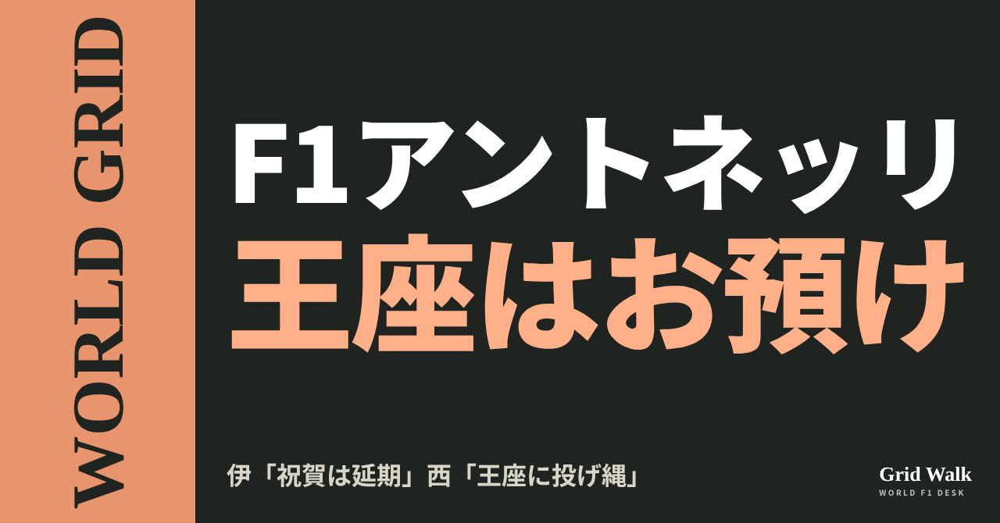
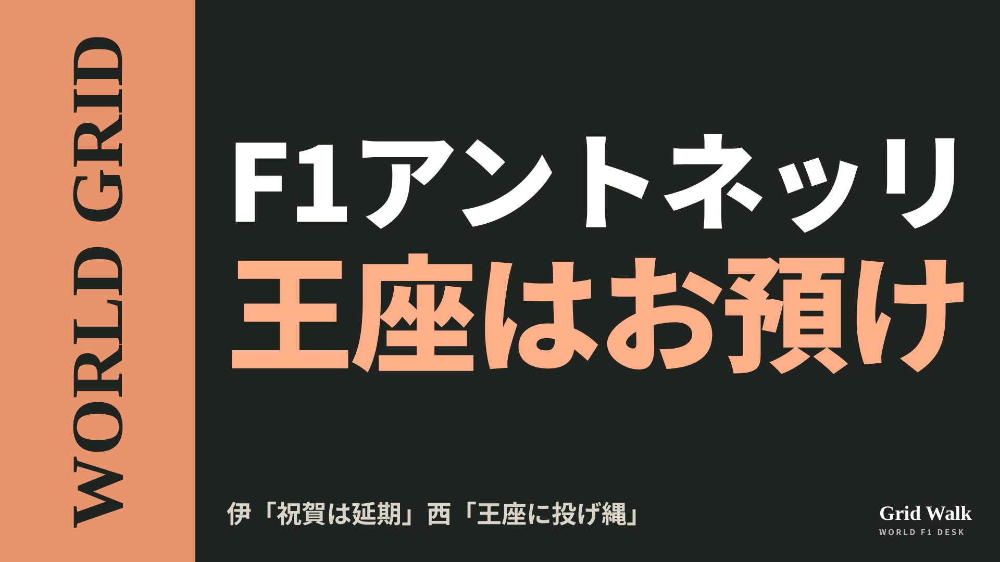
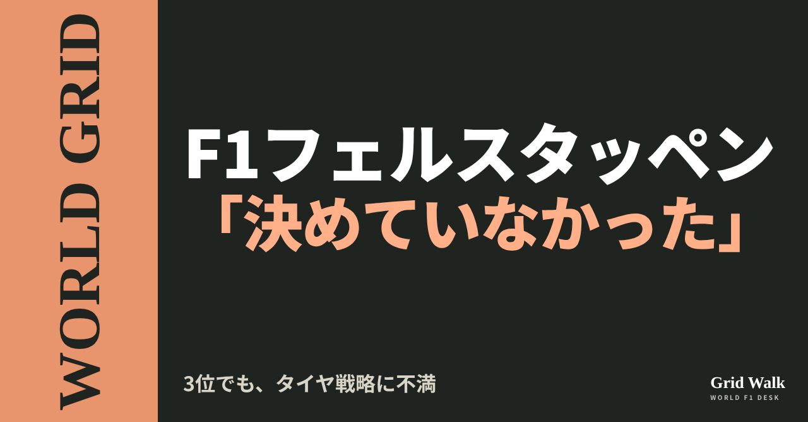
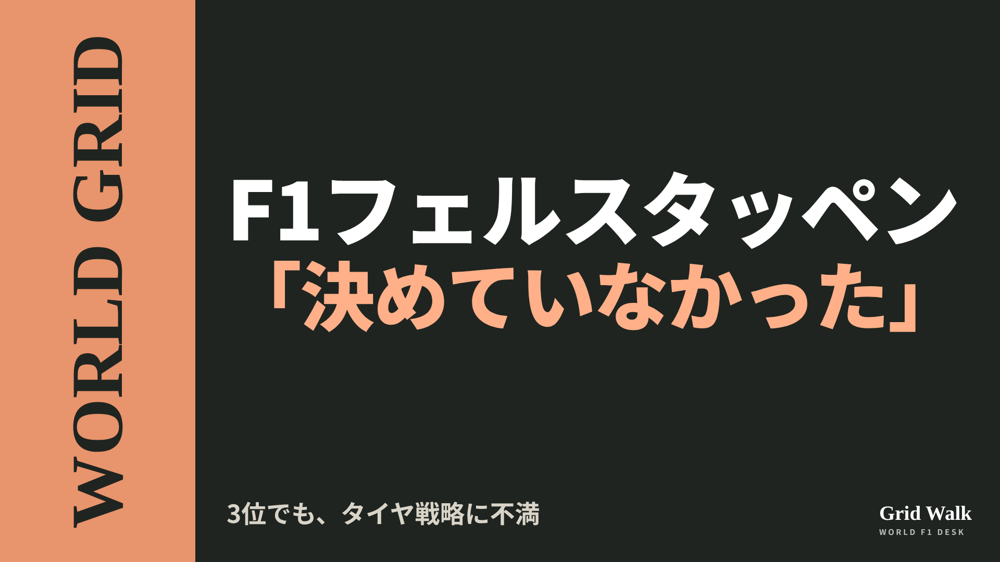
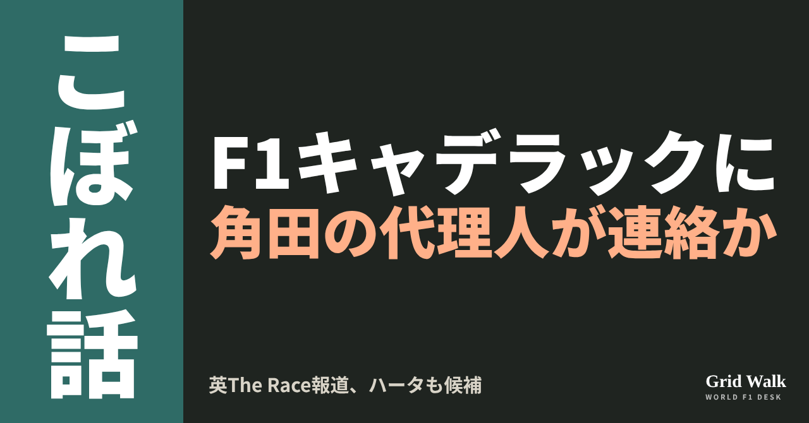
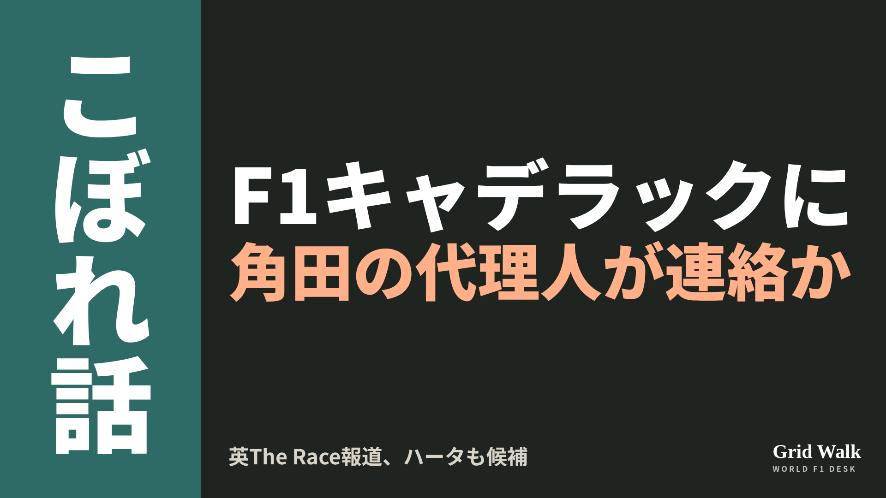

<meta charset="utf-8"><title>アメリカGPのあとの3本 note貼り付け</title>
<style>
/* one column of numbered paste steps; text steps vs image steps differ by marker */
:root{--bg:#F5F4F0;--card:#FFFFFF;--ink:#1D2321;--mute:#5F665F;--line:#DCDAD2;--btn:#1F5FBF;--btnok:#2E8B4F;--img:#E9F3EC;--imgink:#22663B;--sans:'IBM Plex Sans JP','Hiragino Sans','Noto Sans JP',sans-serif}
@media (prefers-color-scheme:dark){:root:not([data-theme="light"]){--bg:#171A19;--card:#202423;--ink:#ECEDE8;--mute:#A3AAA2;--line:#343937;--btn:#4D8BE6;--btnok:#3FA866;--img:#1E2C23;--imgink:#8FD3A6;color-scheme:dark}}
:root[data-theme="dark"]{--bg:#171A19;--card:#202423;--ink:#ECEDE8;--mute:#A3AAA2;--line:#343937;--btn:#4D8BE6;--btnok:#3FA866;--img:#1E2C23;--imgink:#8FD3A6;color-scheme:dark}
body{background:var(--bg);color:var(--ink);font-family:var(--sans);font-size:15px;line-height:1.75;padding:20px 16px 60px}
main{max-width:680px;margin:0 auto;display:grid;gap:28px}
header h1{font-size:22px;margin:0 0 6px;text-wrap:balance}
header p{margin:0;color:var(--mute);font-size:14px}
nav{display:flex;gap:8px;flex-wrap:wrap;margin-top:12px}
nav a{border:1px solid var(--line);border-radius:999px;padding:4px 14px;color:var(--ink);text-decoration:none;font-size:14px;background:var(--card)}
.part h2{font-size:18px;line-height:1.5;margin:0 0 12px;text-wrap:balance;display:flex;gap:10px;align-items:baseline;flex-wrap:wrap}
.tag{font-size:13px;background:var(--ink);color:var(--bg);border-radius:6px;padding:1px 9px}
.steps{list-style:none;margin:0;padding:0;display:grid;gap:12px}
.st{background:var(--card);border:1px solid var(--line);border-radius:12px;padding:12px;min-width:0}
.hd{display:flex;align-items:center;gap:8px;margin-bottom:8px}
.no{width:26px;height:26px;border-radius:50%;background:var(--btn);color:#fff;display:inline-flex;align-items:center;justify-content:center;font-size:13px;font-weight:700;flex:0 0 26px}
.im .no{background:var(--btnok)}
.hd em{font-style:normal;font-size:12px;background:var(--img);color:var(--imgink);border-radius:6px;padding:0 8px}
.bx{font-size:13.5px;line-height:1.7;border:1px solid var(--line);border-radius:8px;padding:8px 10px;max-height:110px;overflow:auto;overflow-wrap:anywhere}
.bx.tall{max-height:150px}.bx p{margin:0 0 6px}.bx h2{font-size:14px;margin:8px 0 4px}.bx a{color:var(--btn)}
.st img{display:block;width:100%;max-width:100%;border:1px solid var(--line);border-radius:8px}
.sub{font-size:12.5px;color:var(--mute);margin:6px 0 0}
.cp{width:100%;margin-top:8px;padding:12px;border:0;border-radius:10px;background:var(--btn);color:#fff;font:600 15px var(--sans);cursor:pointer}
.cp.ok{background:var(--btnok)}.cp.dl{background:var(--btnok)}.cp:focus-visible{outline:3px solid var(--ink);outline-offset:2px}
.xh{font-size:15px;margin:20px 0 10px}
.fb{font-size:13px;line-height:1.7;margin:8px 0 0;padding:8px 10px;border-radius:8px;background:var(--img);color:var(--imgink)}
.opts{display:grid;grid-template-columns:repeat(auto-fill,minmax(240px,1fr));gap:10px}
.opt{min-width:0}.opt img{display:block;width:100%;border:1px solid var(--line);border-radius:8px}
.ol{display:flex;align-items:center;gap:8px;margin-top:6px}.ol b{font-size:13px;flex:0 0 auto}.ol .on{font-size:12.5px;color:var(--mute);flex:1;min-width:0}.ol .cp{width:auto;flex:0 0 auto;padding:9px 14px}.ol .cp{margin:0;padding:9px}
.toast{font-size:13px;color:var(--mute);margin-top:6px}
</style>
<main><header><h1>アメリカGPのあとの3本 note貼り付け</h1><p>いま公開済みは3本です。青い番号は文章、緑は画像です。</p><nav><a href="#p1">1</a><a href="#p2">2</a><a href="#p3">3</a></nav></header><section class="part" id="p1"><h2><span class="tag">WORLD GRID</span>アントネッリ、勝っても王座お預け 伊「祝賀は延期」西「王座に投げ縄」</h2><p class="sub">サイトに公開：09:16</p><ol class="steps">
<li class="st im"><div class="hd"><span class="no">1</span><b>見出し画像</b><em>画像</em></div><button class="cp dl" data-img="img/antonelli-title-mexico-20261026.png" data-name="antonelli-title-mexico-20261026_見出し画像.png">ダウンロード</button></li>
<li class="st"><div class="hd"><span class="no">2</span><b>タイトル</b></div><div class="bx" id="p1t">アントネッリ、勝っても王座お預け 伊「祝賀は延期」西「王座に投げ縄」</div><button class="cp" data-plain="p1t">タイトルをコピー</button></li>
<li class="st"><div class="hd"><span class="no">3</span><b>本文</b></div><div class="bx tall" id="p1r"><p>アメリカGPで、アントネッリはポールから今季9勝目を挙げました。それでも20歳の王座は決まらず、11月1日のメキシコシティGPに持ち越しです。各国の見出しを並べると、同じ結果でも「温度」が違いました。そして多くの記事が書いた「9位で十分」は、何があっても決まる安全圏の話です。</p><p>各国の見出しの違いと、元の記事へのリンクはサイトで → <a href="https://f1gridwalk.github.io/lens/antonelli-title-mexico-20261026/?utm_source=note&amp;utm_campaign=antonelli-title-mexico-20261026">https://f1gridwalk.github.io/lens/antonelli-title-mexico-20261026/?utm_source=note&amp;utm_campaign=antonelli-title-mexico-20261026</a></p><h2>勝っても決まらなかったわけ</h2><p>イタリアのCorriere dello Sportはレース前、オースティンで決まる条件を「アントネッリが優勝、ラッセルが9位以下、ハミルトンが5位以下」と整理していました。結果はハミルトン4位、ラッセル8位（F1公式サイト）。2人とも、条件より1つ上でした。AP通信は、2人がこれより下なら、アントネッリはもう王者だった、と書いています。</p><h2>「延期」「すぐそこ」「投げ縄」</h2><p>イタリアのFanpageの見出しは「優勝、しかし王座の祝賀は延期」。本文は「ほとんど変わらない。おそらく来週メキシコで祝うからだ」と続きます。</p><p>イギリスのBBCの見出しは「王座確定は待たなければならない」。本文は「ラッセルに23点、ハミルトンに24点より多く失わない限り、来週末メキシコシティで王者として戴冠する」と、条件つきで始まります。Sky Sportsは「王座の瀬戸際」とし、メキシコでの戴冠を「ほぼ避けられない」と書きました。</p><p>ドイツのt-onlineは「勝利、しかし王座決定は持ち越し」、Sportschauは「王座はすぐそこ」。スペインでは、通信社EFEが「しかし、まだ王者ではない」とした一方、Europa Pressは「王座に投げ縄をかけた」。Motor.esは「もう最初のタイトルに手をかけている」としました。</p><p>オランダは少し違います。NOSは「最初の王座をほぼ手中に、フェルスタッペン3位」。GPblogの決勝記事は、見出しが「フェルスタッペンの連勝が止まった」で始まり、アントネッリは後半の「王座なしで勝利」でした。</p><h2>「まだ王者ではない王者の走り」</h2><p>メルセデスのウォルフ代表は、ウイニングランの無線で「また小さな一歩だ」と2度言った、とAP通信は伝えています。レース後にはこう話しました。</p><blockquote><p>「まだ王者ではない王者の走りだった」（ウォルフ、PA通信（Irish News）／イギリス）</p></blockquote><blockquote><p>「彼はメキシコで最後まで走り切らないといけない。走り切ったら、テキーラだ」（ウォルフ、Formel1.de／ドイツ）</p></blockquote><p>ブラジルのGrande Premioによると、ウォルフは英Sky Sports F1に、アントネッリがレース前に「変なんです、王座のことを全然考えていない。おかしくないですか？」と話していたと明かしました。本人はレース後、こう話しています。</p><blockquote><p>「僕たちに必要な結果でした。チーム全員がそれにふさわしい」「楽しもうとして、できればもう一度勝利を争いたい。いい形で終われたらいちばんです」（アントネッリ、AP通信／アメリカ）</p></blockquote><h2>メキシコで王者になる条件</h2><p>F1公式サイトの順位は、アントネッリ365点、ラッセル242点、ハミルトン241点、フェルスタッペン236点、ルクレール233点。残り5戦にスプリントはなく、取れるのは最大125点、メキシコのあとは100点です（GPblog、AP通信、F1公式サイト）。点が並べば勝利数で比べ、9勝のアントネッリが上に来ます（GPblog）。つまりメキシコのあと、全員に100点以上の差があれば決まりです。</p><p>BBCの計算では、メキシコでラッセルに縮められる差が23点まで、ハミルトンに24点までなら王者です。ラッセルが勝てば（25点）、アントネッリは9位（2点）以上が必要。ハミルトンが勝てば10位（1点）以上。2人とも勝たなければ、2位でも18点なので、アントネッリは何位でも決まります（BBC、AP通信）。フェルスタッペンとルクレールは、どんな結果でも止められません（GPblog）。編集部の計算でも同じ結論です。カタールとアブダビが中止になれば、条件はさらに緩くなります。</p><p>dpaやNOS、Corriere dello Sportは「9位で十分」と書きました。ほかの結果に関係なく決まる順位、という意味です。AP通信によると、決まればアルベルト・アスカリ（1953年）以来のイタリア人王者です。</p><p><strong>アントネッリの王座、メキシコで決まると思いますか？ それとも、もう一戦もつれる？</strong></p><p>━━━━━━━━━━</p><p><strong>F1 Grid Walk では、世界のF1ニュースを毎日日本語でまとめています。</strong></p><p>海外の記事の要約を、毎日載せています。</p><p><a href="https://f1gridwalk.github.io/">https://f1gridwalk.github.io/</a></p><p>ほかの海外記事も読みたい方は、F1 Grid Walkへ。</p><p><a href="https://f1gridwalk.github.io/lens/antonelli-title-mexico-20261026/">https://f1gridwalk.github.io/lens/antonelli-title-mexico-20261026/</a></p><p>━━━━━━━━━━</p><p><a href="https://www.formula1.com/en/latest/article/antonelli-surges-to-dominant-victory-in-united-states-grand-prix-ahead-of-leclerc-and-verstappen.6kmBQv9FNTW7LzkDj8S34j">出典：F1公式サイト（イギリス）</a></p><p><a href="https://www.formula1.com/en/results/2026/drivers">出典：F1公式サイト（イギリス）</a></p><p><a href="https://www.formula1.com/en/latest/article/formula-1-and-fia-announce-2026-sprint-calendar.3PyLPAazrBNe8kQIS3wOfY">出典：F1公式サイト（イギリス）</a></p><p><a href="https://www.fanpage.it/sport/motori/antonelli-domina-e-vince-il-gp-usa-ma-la-festa-per-il-mondiale-e-rimandata-leclerc-secondo/">出典：Fanpage（イタリア）</a></p><p><a href="https://www.corrieredellosport.it/news/formula-1/2026/10/25-152153720/gp_austin_diretta_f1_segui_la_gara_antonelli_pu_diventare_campione_del_mondo_live">出典：Corriere dello Sport（イタリア）</a></p><p><a href="https://www.corrieredellosport.it/news/formula-1/2026/10/25-152164423/gp_del_messico_antonelli_quasi_campione_del_mondo_date_orari_e_come_vederlo_in_tv_e_streaming">出典：Corriere dello Sport（イタリア）</a></p><p><a href="https://sports.yahoo.com/articles/antonelli-wins-us-wait-secure-215237448.html">出典：BBC（Yahoo Sports）（イギリス）</a></p><p><a href="https://www.skysports.com/f1/news/13603603/united-states-gp-kimi-antonelli-wins-austin-race-to-move-to-brink-of-f1-world-title-after-dominant-drive">出典：Sky Sports（イギリス）</a></p><p><a href="https://www.irishnews.com/sport/motorsport/kimi-antonelli-aiming-to-complete-his-f1-title-march-in-style-in-mexico-city-TE2W54OPWVNU7OKMARPJ7B6PDE/">出典：PA通信（Irish News）（イギリス）</a></p><p><a href="https://www.t-online.de/sport/formel-1/id_101497058/formel-1-in-austin-antonelli-siegt-aber-wm-entscheidung-vertagt.html">出典：t-online（ドイツ）</a></p><p><a href="https://www.sportschau.de/motorsport/formel1/formel-1-antonelli-gewinnt-in-austin-titel-ganz-nah,gp-usa-antonelli-100.html">出典：Sportschau（ドイツ）</a></p><p><a href="https://www.tagesspiegel.de/sport/dpa-formel-1-antonelli-siegt-und-legt-sich-titel-fur-mexiko-zurecht-16200884.html">出典：dpa（Tagesspiegel）（ドイツ）</a></p><p><a href="https://www.formel1.de/news/grand-prix-berichte/2026-10-26/antonelli-vor-dem-letzten-schritt-das-war-die-fahrt-eines-champions">出典：Formel1.de（ドイツ）</a></p><p><a href="https://www.infobae.com/espana/agencias/2026/10/25/antonelli-gana-en-austin-por-delante-de-leclerc-y-verstappen-pero-aun-no-es-campeon/">出典：EFE（Infobae）（スペイン）</a></p><p><a href="https://www.infobae.com/america/agencias/2026/10/25/antonelli-lo-hace-facil-en-austin-y-echa-el-lazo-al-mundial/">出典：Europa Press（Infobae）（スペイン）</a></p><p><a href="https://www.motor.es/formula-1/cronica-gp-estados-unidos-2026117229.html">出典：Motor.es（スペイン）</a></p><p><a href="https://nos.nl/artikel/2636675-antonelli-wint-in-austin-en-heeft-eerste-f1-titel-bijna-binnen-verstappen-derde">出典：NOS（オランダ）</a></p><p><a href="https://www.gpblog.com/nl/nieuws/verstappens-zegereeks-eindigt-met-moeizame-race-in-austin-antonelli-zegeviert-zonder-titel">出典：GPblog（オランダ）</a></p><p><a href="https://www.gpblog.com/en/news/f1-title-within-reach-what-antonelli-needs-to-become-champion-in-mexico">出典：GPblog（オランダ）</a></p><p><a href="https://www.tsn.ca/motorsports/formula-1/article/antonelli-wins-dominant-us-grand-prix-tightens-grip-on-historic-f1-title-chase/">出典：AP通信（TSN）（アメリカ）</a></p><p><a href="https://grandepremio.com/en/f1/antonelli-stunned-wolff-with-private-pre-race-confession-before-defeating-verstappen-in-austin/">出典：Grande Premio（ブラジル）</a></p></div><button class="cp" data-rich="p1r">本文をコピー</button></li>
<li class="st"><div class="hd"><span class="no">4</span><b>ハッシュタグ</b></div><div class="bx" id="p1h">#F1 #F1jp #アントネッリ #メルセデス #アメリカGP #メキシコシティGP #トトウォルフ #WORLDGRID #海外F1</div><button class="cp" data-plain="p1h">タグをコピー</button></li>
</ol><h3 class="xh">X</h3><ol class="steps">
<li class="st im"><div class="hd"><b>X用の画像</b><em>画像</em></div><button class="cp dl" data-img="img/x_antonelli-title-mexico-20261026.png" data-name="x_antonelli-title-mexico-20261026.png">ダウンロード</button></li>
<li class="st"><div class="hd"><b>① noteをシェアするときの文</b></div><div class="bx" id="p1x0">アントネッリはポールから今季9勝目、それでも王座はメキシコへ。イタリアは「祝賀は延期」、スペインは「王座に投げ縄」。各国の見出しと、メキシコで王者になる条件をnoteにまとめました #F1jp #アメリカGP</div><button class="cp" data-plain="p1x0">コピー</button></li>
<li class="st"><div class="hd"><b>② ①への返信</b></div><div class="bx" id="p1x1">ほかの海外記事も読みたい方は、F1 Grid Walkへ。
https://f1gridwalk.github.io/lens/antonelli-title-mexico-20261026/?utm_source=x&amp;utm_campaign=antonelli-title-mexico-20261026</div><button class="cp" data-plain="p1x1">コピー</button></li>
<li class="st"><div class="hd"><b>③ ②への返信</b></div><div class="bx" id="p1x2">毎日の海外F1ニュースは、日本語でこちらにまとめています。
https://f1gridwalk.github.io/</div><button class="cp" data-plain="p1x2">コピー</button></li>
</ol></section><section class="part" id="p2"><h2><span class="tag">WORLD GRID</span>フェルスタッペン「事前に決めていなかった」 3位でもタイヤ戦略に不満</h2><p class="sub">サイトに公開：09:15</p><ol class="steps">
<li class="st im"><div class="hd"><span class="no">1</span><b>見出し画像</b><em>画像</em></div><button class="cp dl" data-img="img/verstappen-p3-strategy-20261026.png" data-name="verstappen-p3-strategy-20261026_見出し画像.png">ダウンロード</button></li>
<li class="st"><div class="hd"><span class="no">2</span><b>タイトル</b></div><div class="bx" id="p2t">フェルスタッペン「事前に決めていなかった」 3位でもタイヤ戦略に不満</div><button class="cp" data-plain="p2t">タイトルをコピー</button></li>
<li class="st"><div class="hd"><span class="no">3</span><b>本文</b></div><div class="bx tall" id="p2r"><p>アメリカGPの決勝、フェルスタッペンは3位で表彰台に上りました。それでもレース後、オランダで中継するViaplayには「もっと楽しいレースもありました」と話し、レッドブルのタイヤの選び方に不満を向けました。オランダ語と英語では、出てきた言葉も、記事の見出しの強さも違いました。</p><p>各国の記事の見出しの違いと、元の記事へのリンクはサイトで → <a href="https://f1gridwalk.github.io/lens/verstappen-p3-strategy-20261026/?utm_source=note&amp;utm_campaign=verstappen-p3-strategy-20261026">https://f1gridwalk.github.io/lens/verstappen-p3-strategy-20261026/?utm_source=note&amp;utm_campaign=verstappen-p3-strategy-20261026</a></p><h2>何が不満だったのか</h2><p>決勝はソフトでスタート。ルクレールに一度抜かれ、すぐに取り返しました。オランダのGPblogによると、14周目に入ってもう一度ソフトを履き、31周目の2回目のピットでミディアムに替えました。この2回目は右前のタイヤ交換が遅れて3.9秒かかっています（GPblog英語版）。優勝したアントネッリは、ミディアムからハードの1ストップでした。49周目にルクレールに2位を奪われ、最後はボッタスの停止によるバーチャルセーフティカー（VSC）にも助けられて、ハミルトンを抑えました。</p><blockquote><p>「スタートはうまくいかなかったし、タイヤの選び方もです。ソフト、ソフト、ミディアムは、事前に決めていなかった。なぜそうなったのか、よく分かりません」（フェルスタッペン、RacingNews365／オランダ、Viaplayへの話）</p></blockquote><p>エンジンにも不満があり、Viaplayには「あるコーナーではエンジンブレーキが足りずに車が押し出され、次はまたとても攻撃的」と話しています。ドイツのMotorsport-Total.comによると、レース中の無線では「車に問題があるはず。運転できない」と訴え、エンジニアがエンジンブレーキの問題が見えると答えると、「聞こえない、聞こえない」と返しました。</p><h2>英語では「理解しないと」</h2><p>英語で伝わった言葉には、「取り決め」の話は出てきません。</p><blockquote><p>「全体のペースが足りなかったし、持っていたタイヤも、たぶん正しいものではなかったと思います」「ここ数戦はいつもうまくいっていたので、理解しないといけないことです」「最後のVSCで少し運がよかったかもしれないけど、受け取っておきます」（フェルスタッペン、AFP通信／フランス）</p></blockquote><p>イギリスのCrash.netには、もう一歩踏み込んだ言葉があります。</p><blockquote><p>「たぶん、柔らかいタイヤがいちばん速かったここ数戦の考えに、少しこだわりすぎた」「もちろん違うタイヤを選んでいたら、たぶん2位になれた。でも、それは後からならいつでも言えることです」（フェルスタッペン、Crash.net／イギリス）</p></blockquote><p>ブラジルのGrande Prêmioは、Sky Sports F1への「正しい順番でタイヤを使っていても、正しいコンパウンドを選んでいても、キミのペースはなかったと思います」という言葉から、アントネッリには届かなかったと認めた点を見出しにしました。</p><p>見出しの差もはっきりしています。RacingNews365はオランダ語版で「いら立つフェルスタッペン、レッドブルに非常に批判的」、英語版では「フェルスタッペン、レッドブルの戦略に疑問」。同じ媒体でも、言語でトーンが変わりました。</p><h2>レッドブルの説明</h2><p>メキース代表の伝えられた言葉に、タイヤの選び方そのものの話はありません。</p><blockquote><p>「キミは間違いなく、私たちには強すぎました」「少し鋭さが欠けていたと思います。小さな問題がたくさん積み重なって、ほんの少しスピードが足りず、タイヤの摩耗が増えました」「P3は受け入れます。たぶんマシンにあったものを全部は引き出せなかったと分かったうえで」（メキース代表、RacingNews365／オランダ）</p></blockquote><p>GPblog英語版の分析は、1回目のピットの時点でアントネッリとの差は2.5秒でアンダーカットは狙えたとしつつ、その後ハジャーがなかなか道を譲らず、フェルスタッペンが時間を失ったと書いています。</p><p>それでも3位です。F1公式の結果では、COTAでの表彰台は2018年から8回連続（2020年は開催なし）となり、2014年から2022年まで8回続けたハミルトンに並びました。</p><p>編集部としては、母国語の取材では「事前に決めていなかった」とチームとのやり取りにまで踏み込み、英語ではタイヤの判断の話にとどまった点が違いだと見ています。なぜ2回目もソフトだったのか、チームからの説明はまだ伝えられていません。</p><p><strong>2回目もソフトを選んだレッドブルの判断、あなたはどう見ますか？</strong></p><p>━━━━━━━━━━</p><p><strong>F1 Grid Walk では、世界のF1ニュースを毎日日本語でまとめています。</strong></p><p>海外の記事の要約を、毎日載せています。</p><p><a href="https://f1gridwalk.github.io/">https://f1gridwalk.github.io/</a></p><p>ほかの海外記事も読みたい方は、F1 Grid Walkへ。</p><p><a href="https://f1gridwalk.github.io/lens/verstappen-p3-strategy-20261026/">https://f1gridwalk.github.io/lens/verstappen-p3-strategy-20261026/</a></p><p>━━━━━━━━━━</p><p><a href="https://racingnews365.nl/geirriteerde-verstappen-zeer-kritisch-op-red-bull-dit-was-niet-afgesproken">出典：RacingNews365（オランダ語版）（オランダ）</a></p><p><a href="https://racingnews365.nl/red-bull-verklaart-ingewikkelde-race-verstappen">出典：RacingNews365（オランダ語版）（オランダ）</a></p><p><a href="https://racingnews365.com/max-verstappen-questions-red-bull-strategy-in-third-consecutive-victory-failure">出典：RacingNews365（英語版）（オランダ）</a></p><p><a href="https://www.gpblog.com/nl/nieuws/verstappen-wil-uitleg-van-red-bull-dat-was-niet-afgesproken-zo">出典：GPblog（オランダ）</a></p><p><a href="https://www.gpblog.com/en/analysis/how-verstappen-and-red-bull-were-brought-back-down-to-earth-in-america">出典：GPblog（英語版）（オランダ）</a></p><p><a href="https://www.gpblog.com/en/news/red-bull-has-no-choice-but-to-admit-it-after-verstappens-harsh-words">出典：GPblog（英語版）（オランダ）</a></p><p><a href="https://www.gpfans.com/nl/f1-nieuws/1091998/verstappen-haalt-uit-naar-red-bull-na-race-in-austin-niet-afgesproken/">出典：GPFans（オランダ語版）（オランダ）</a></p><p><a href="https://sports.yahoo.com/articles/disappointed-verstappen-admits-wrong-tyre-230404269.html">出典：AFP通信（Yahoo Sports）（フランス）</a></p><p><a href="https://www.crash.net/f1/news/1108514/1/max-verstappen-critical-red-bull-he-outlines-us-gp-frustrations">出典：Crash.net（イギリス）</a></p><p><a href="https://grandepremio.com/en/f1/verstappen-exposes-red-bulls-austin-mistakes-and-admits-antonelli-was-out-of-reach/">出典：Grande Prêmio（英語版）（ブラジル）</a></p><p><a href="https://www.motorsport-total.com/formel-1/news/kimi-antonelli-gewinnt-in-austin-jetzt-fehlen-nur-noch-zwei-punkte-26102523">出典：Motorsport-Total.com（ドイツ）</a></p><p><a href="https://www.formula1.com/en/results/2026/races/1297/united-states/race-result">出典：Formula1.com（イギリス）</a></p></div><button class="cp" data-rich="p2r">本文をコピー</button></li>
<li class="st"><div class="hd"><span class="no">4</span><b>ハッシュタグ</b></div><div class="bx" id="p2h">#F1 #F1jp #アメリカGP #フェルスタッペン #レッドブル #メキース #アントネッリ #F1戦略 #WORLDGRID</div><button class="cp" data-plain="p2h">タグをコピー</button></li>
</ol><h3 class="xh">X</h3><ol class="steps">
<li class="st im"><div class="hd"><b>X用の画像</b><em>画像</em></div><button class="cp dl" data-img="img/x_verstappen-p3-strategy-20261026.png" data-name="x_verstappen-p3-strategy-20261026.png">ダウンロード</button></li>
<li class="st"><div class="hd"><b>① noteをシェアするときの文</b></div><div class="bx" id="p2x0">アメリカGP3位のフェルスタッペン、オランダのテレビには「事前に決めていなかった」。2回目もソフトにしたタイヤ戦略への不満を、オランダ語と英語の発言で比べてnoteにまとめました #F1jp #アメリカGP</div><button class="cp" data-plain="p2x0">コピー</button></li>
<li class="st"><div class="hd"><b>② ①への返信</b></div><div class="bx" id="p2x1">ほかの海外記事も読みたい方は、F1 Grid Walkへ。
https://f1gridwalk.github.io/lens/verstappen-p3-strategy-20261026/?utm_source=x&amp;utm_campaign=verstappen-p3-strategy-20261026</div><button class="cp" data-plain="p2x1">コピー</button></li>
<li class="st"><div class="hd"><b>③ ②への返信</b></div><div class="bx" id="p2x2">毎日の海外F1ニュースは、日本語でこちらにまとめています。
https://f1gridwalk.github.io/</div><button class="cp" data-plain="p2x2">コピー</button></li>
</ol></section><section class="part" id="p3"><h2><span class="tag">OFF GRID</span>角田裕毅の代理人がキャデラックに連絡と英報道　ハータも候補</h2><p class="sub">サイトに公開：09:14</p><ol class="steps">
<li class="st im"><div class="hd"><span class="no">1</span><b>見出し画像</b><em>画像</em></div><button class="cp dl" data-img="img/tsunoda-cadillac-rumor-20261026.png" data-name="tsunoda-cadillac-rumor-20261026_見出し画像.png">ダウンロード</button></li>
<li class="st"><div class="hd"><span class="no">2</span><b>タイトル</b></div><div class="bx" id="p3t">角田裕毅の代理人がキャデラックに連絡と英報道　ハータも候補</div><button class="cp" data-plain="p3t">タイトルをコピー</button></li>
<li class="st"><div class="hd"><span class="no">3</span><b>本文</b></div><div class="bx tall" id="p3r"><p>角田裕毅の代理人が、2027年の席をめぐってキャデラックに連絡している。イギリスのThe Raceが10月24日にそう報じました。同じ記事は、ボッタスの後任候補としてハータの名前も挙げています。角田本人、レッドブル、キャデラックは、確かめた範囲では答えていません。</p><p>The Raceの記事の要約と、各国の元の記事へのリンクはサイトで → <a href="https://f1gridwalk.github.io/lens/tsunoda-cadillac-rumor-20261026/?utm_source=note&amp;utm_campaign=tsunoda-cadillac-rumor-20261026">https://f1gridwalk.github.io/lens/tsunoda-cadillac-rumor-20261026/?utm_source=note&amp;utm_campaign=tsunoda-cadillac-rumor-20261026</a></p><h2>The Raceは何と書いたか</h2><p>記事は「角田の代理人が2027年のチャンスについてキャデラックに連絡しており、彼は候補の一人だ」と書いています。情報源の名前はなく、連絡したのは本人ではなく代理人、という書き方です。</p><p>The Raceによると、2027年に「空いている」席はキャデラックだけ。レーシングブルズはレッドブルと契約するドライバーから選ぶからです。候補の誰もほかに席の当てがないため、キャデラックは決定を急いでいない、とも書いています。要約はサイトに（https://f1gridwalk.github.io/news/en-therace-herta-could-replace-bottas/ ）。</p><p>角田は今季、レッドブルのテスト兼リザーブで、レーシングブルズのリザーブも兼任。ハジャーの負傷でオランダGPからの3戦に出場し、そのオランダGPのあと、インディカー行きのうわさについてこう話していました。</p><blockquote><p>「そういうことを見るのは僕の仕事じゃない。完全にマネージャーに任せていて、僕の仕事は速く走ることなんです」「でも、2年もガレージにいるのは嫌です。走りたいんです」（角田、RacingNews365／イギリス）</p></blockquote><p>アメリカのRACERは10月13日、角田が10月26日のインディカーのテストに参加する見込みと報じました。ところが10月22日には、メイヤー・シャンクのこの計画は取りやめになり、角田はF1のチャンスに集中することを選んだと伝えています。年内のテスト参加はありうる、とも書いています。</p><h2>ハータは「あと1点」、オコンは別のチームか</h2><p>オランダのGPblogは10月24日、独自の情報として、ボッタスを代えるなら首脳陣の第一候補はハータだと報じました。今季5回目のFP1を任せるのは「偶然ではない」とし、100km以上を問題なく走ればスーパーライセンスのポイントを1点得て申請できる、と書いています。</p><p>ハータのオースティンでのFP1は意図の表れかと聞かれたブコウスキー代表は、スカイスポーツにこう答えたと、PlanetF1が伝えています。</p><blockquote><p>「あと1点です」（ブコウスキー代表、PlanetF1／イギリス）</p></blockquote><p>オコンについてThe Raceは、キャデラックにはレースでもリザーブでも加わらないとみており、「代わりに、アストンマーティンのような別のチームでリザーブの役に就く可能性が高い」と書いています。オコン側の打診を伝えたGPblogの報道は、前回のこぼれ話で紹介しました（https://f1gridwalk.github.io/lens/ralf-bottas-cycling-20261025/ ）。</p><h2>ボッタスは「そういうもの」</h2><p>当のボッタスは、オースティンの予選のあと、うわさについてこう答えています。</p><blockquote><p>「うわさはいくつか聞いたけど、自分の状況は分かっているし、問題ない」「F1だからね。誰もがF1にいたい。だから、そういうものなんだ」（ボッタス、GPblog／オランダ）</p></blockquote><p>ブコウスキー代表は、ペレスの引退をめぐる質問の流れで、2人をこう比べました。</p><blockquote><p>「ドライバーが2人いて、1人はより熱く、1人はたぶんより冷たい、と言えるでしょうか」（ブコウスキー代表、Motorsport Week／イギリス）</p></blockquote><p>熱い方がペレス、冷たい方がボッタスだと同誌は書いています。The Raceによると、2人がそろって走った決勝の周回のうち、ボッタスがペレスの前にいたのは18％だけ。ただ、ボッタスとは長期契約のため、交代させるなら何らかの取り決めが必要、とも。</p><p>角田の件はまだ報道の段階です。The Raceの見立てどおりなら、答えが出るのはもう少し先になりそうです。</p><p><strong>角田がキャデラックで走る2027年、見てみたいですか？</strong></p><p>━━━━━━━━━━</p><p><strong>F1 Grid Walk では、世界のF1ニュースを毎日日本語でまとめています。</strong></p><p>海外の記事の要約を、毎日載せています。</p><p><a href="https://f1gridwalk.github.io/">https://f1gridwalk.github.io/</a></p><p>ほかの海外記事も読みたい方は、F1 Grid Walkへ。</p><p><a href="https://f1gridwalk.github.io/lens/tsunoda-cadillac-rumor-20261026/">https://f1gridwalk.github.io/lens/tsunoda-cadillac-rumor-20261026/</a></p><p>━━━━━━━━━━</p><p><a href="https://www.the-race.com/formula-1/herta-could-replace-bottas-at-cadillac-in-f1-2027/">出典：The Race（イギリス）</a></p><p><a href="https://racingnews365.com/yuki-tsunoda-addresses-f1-exit-reports-amid-indycar-rumours">出典：RacingNews365（イギリス）</a></p><p><a href="https://racer.com/2026/10/13/tsunoda-in-the-frame-for-indycar-test-with-meyer-shank">出典：RACER（アメリカ）</a></p><p><a href="https://racer.com/2026/10/22/finish-line-in-sight-for-indycar-silly-season">出典：RACER（アメリカ）</a></p><p><a href="https://www.gpblog.com/en/breaking-news/herta-firmly-in-the-frame-at-cadillac-as-bottas-replacement">出典：GPblog（英語版）（オランダ）</a></p><p><a href="https://www.gpblog.com/en/news/bottas-addresses-rumors-about-his-cadillac-future-thats-how-it-goes-in-formula-1">出典：GPblog（英語版）（オランダ）</a></p><p><a href="https://www.planetf1.com/news/valtteri-bottas-cadillac-f1-seat-rumours-response">出典：PlanetF1（イギリス）</a></p><p><a href="https://www.motorsportweek.com/2026/10/24/cadillac-f1-drivers-in-contact/">出典：Motorsport Week（イギリス）</a></p></div><button class="cp" data-rich="p3r">本文をコピー</button></li>
<li class="st"><div class="hd"><span class="no">4</span><b>ハッシュタグ</b></div><div class="bx" id="p3h">#F1 #F1jp #角田裕毅 #キャデラック #ハータ #ボッタス #アメリカGP #F1ゴシップ #F1こぼれ話 #OFFGRID</div><button class="cp" data-plain="p3h">タグをコピー</button></li>
</ol><h3 class="xh">X</h3><ol class="steps">
<li class="st im"><div class="hd"><b>X用の画像</b><em>画像</em></div><button class="cp dl" data-img="img/x_tsunoda-cadillac-rumor-20261026.png" data-name="x_tsunoda-cadillac-rumor-20261026.png">ダウンロード</button></li>
<li class="st"><div class="hd"><b>① noteをシェアするときの文</b></div><div class="bx" id="p3x0">角田裕毅の代理人がキャデラックに連絡している、と英The Raceが報じました。ハータは代表いわく「あと1点」、ボッタスは「そういうもの」。キャデラックの2027年の席をめぐる報道をnoteにまとめました #F1jp #F1ゴシップ</div><button class="cp" data-plain="p3x0">コピー</button></li>
<li class="st"><div class="hd"><b>② ①への返信</b></div><div class="bx" id="p3x1">ほかの海外記事も読みたい方は、F1 Grid Walkへ。
https://f1gridwalk.github.io/lens/tsunoda-cadillac-rumor-20261026/?utm_source=x&amp;utm_campaign=tsunoda-cadillac-rumor-20261026</div><button class="cp" data-plain="p3x1">コピー</button></li>
<li class="st"><div class="hd"><b>③ ②への返信</b></div><div class="bx" id="p3x2">毎日の海外F1ニュースは、日本語でこちらにまとめています。
https://f1gridwalk.github.io/</div><button class="cp" data-plain="p3x2">コピー</button></li>
</ol></section></main><script>
function done(b,msg){const t=b.dataset.t||b.textContent;b.dataset.t=t;b.classList.add('ok');b.textContent=msg||'コピーしました';setTimeout(()=>{b.classList.remove('ok');b.textContent=t},2000)}
function selectEl(el){const r=document.createRange();r.selectNodeContents(el);const s=getSelection();s.removeAllRanges();s.addRange(r)}
async function rich(el,b){
  try{await navigator.clipboard.write([new ClipboardItem({'text/html':new Blob([el.innerHTML],{type:'text/html'}),'text/plain':new Blob([el.innerText],{type:'text/plain'})})]);done(b);return}catch(e){}
  selectEl(el);let ok=false;try{ok=document.execCommand('copy')}catch(e){}
  if(ok){getSelection().removeAllRanges();done(b)}else{done(b,'選択しました。コピーしてください')}}
async function plain(el,b){
  try{await navigator.clipboard.writeText(el.innerText);done(b);return}catch(e){}
  selectEl(el);let ok=false;try{ok=document.execCommand('copy')}catch(e){}
  if(ok){getSelection().removeAllRanges();done(b)}else{done(b,'選択しました。コピーしてください')}}
let dlns=null;(async()=>{try{dlns=await window.claude?.use?.("downloads")}catch(e){dlns=null}})();
async function img(src,b){
  b.dataset.t=b.dataset.t||b.textContent;
  if(!dlns){try{dlns=await window.claude?.use?.("downloads")}catch(e){}}
  if(!dlns){b.textContent='ダウンロードできませんでした';setTimeout(()=>{b.textContent=b.dataset.t},3500);return}
  try{const blob=await fetch(src).then(r=>r.blob());b.textContent='保存の確認を開いています…';
    await dlns.save({filename:b.dataset.name,data:blob});done(b,'ダウンロードしました')}
  catch(e){const c=e&&e.code;b.textContent=c==='declined'?'キャンセルしました':c==='rate_limited'?'少し待ってからもう一度押してください':'ダウンロードできませんでした';setTimeout(()=>{b.textContent=b.dataset.t},3500)}}
document.querySelectorAll('.cp').forEach(b=>b.addEventListener('click',()=>{
  if(b.dataset.rich)rich(document.getElementById(b.dataset.rich),b);
  else if(b.dataset.plain)plain(document.getElementById(b.dataset.plain),b);
  else img(b.dataset.img,b)}));
</script>